Introduction
In this section we will start with the basics of how to use the LAPOP
AmericasBarometer dataset for statistical purposes. First, we will look
at the basics of how to describe a variable using a frequency
distribution table and how to graph that variable using pie or bar
charts. For that, we are going to use the latest regional report “The
pulse of democracy”, available here,
where the main findings of the 2018/19 round of the AmericasBarometer
are presented. One of the sections of this document, reports data on
social networks and political attitudes. In this section, data on the
use of the internet and the use of social networks are presented, in
general and by country. With the data from the AmericasBarometer, it is
possible to know the percentage of households with cell phone access,
with internet access, as well as the percentage of people who use
WhatsApp, Facebook or Twitter. In this document we are going to
reproduce these results.
About the dataset
The data that we are going to use should be cited as follows: Source:
AmericasBarometer by the Latin American Public Opinion Project (LAPOP),
wwww.LapopSurveys.org. In this document a trimmed dataset is reloaded
from scratch. It is recommended again to clean the Environment of the
objects used in previous modules.
This dataset is hosted in the “materials_edu” repository of LAPOP’s
GitHub account. Using the library rio and the
commandimport, this dataset can be imported from this
repository. In addition, the data for countries with codes less than or
equal to 35 are selected, it means that observations for the United
States and Canada are eliminated.
library(rio)
lapop18 = import("https://raw.github.com/lapop-central/materials_edu/main/LAPOP_AB_Merge_2018_v1.0.sav")
lapop18 = subset(lapop18, pais<=35)
We also load the 2021 round dataset.
lapop21 = import("https://raw.github.com/lapop-central/materials_edu/main/lapop21.RData")
lapop21 = subset(lapop21, pais<=35)
Support for democracy
The report The Pulse of Democracy 2021 shows the results for support
for democracy by country. Figure 1.1 shows the percentage of people who
support democracy in abstract in each country.

In a previous section, we explain how to recode variable ING4,
originally measured in a 1-7 scale, where 1 means “Strongly diesagree”
and 7 means “Strongly agree”. Values between 5 and 7 are recoded as “1”
and this value identifies those who support democracy. The rest are
recoded as “0”, those who do not support democracy. The new recoded
variable are saved in a new variable “ing4rec”.
library(car)
lapop21$ing4rec = car::recode(lapop21$ing4, "1:4=0; 5:7=1")
In strict sense, this variable is not numeric even though it is
defined as “dbl” in the dataset, which is a type of numeric variable.
This variable is qualitative, nominal, that is defined as factor in R.
For correctly defined and labelled, we have to transform this variable.
First, we have to define as factor with the command
as.factor.
lapop21$ing4rec = as.factor(lapop21$ing4rec)
A factor variable can have levels for each numeric value. The
definition of levels has the goal that tables of figures do not show
numeric codes, but the corresponding label. We can do this using the
command levels. Then, we can describe this variable with
the command table that gives absolute frequencies for each
category of this variable.
levels(lapop21$ing4rec) = c("No", "Yes")
table(lapop21$ing4rec)
##
## No Yes
## 20523 36240
Describe variables
As we see in the section Manipulation, we can use the command
prop.table to obtain relative frequencies and the command
round to show just one decimal.
round(prop.table(table(lapop21$ing4rec))*100, 1)
##
## No Yes
## 36.2 63.8
Results show two categories in the variable “support for democracy”.
However, this variable has missing values. For getting a table showing
missing values, we can use the command table with the
specification useNA = "always".
round(prop.table(table(lapop21$ing4rec, useNA = "always"))*100, 1)
##
## No Yes <NA>
## 33.8 59.7 6.4
This table shows that we have 6.4% of missing cases of the total
observations. The presentation of missing values in tables or figures
depends of the researcher.
Plot a variable
We can plot a variable of type “factor” in multiple ways. A
possibility is by a circular graph. We can use the command
pie, which is part of the basic syntax of R. Within this
command, we can nest the command table to plot values of a
contingency table.
pie(table(lapop21$ing4rec))
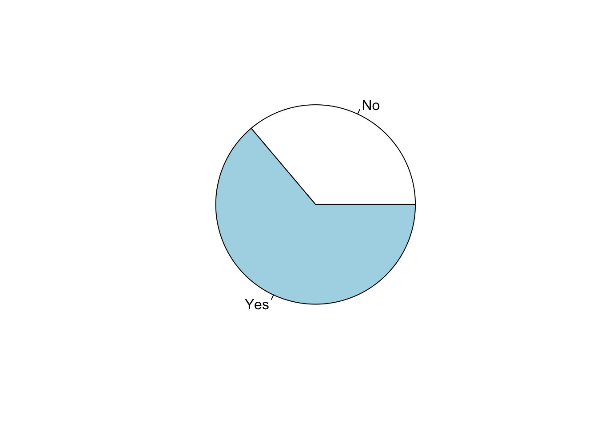
This figure has some option to customization. For example, the
specification labels = … serves to include the number of
observation in each sector, and the specification col =…
works to define colors of sectors.
pie(table(lapop21$ing4rec), labels=table(lapop21$ing4rec), col=1:2)
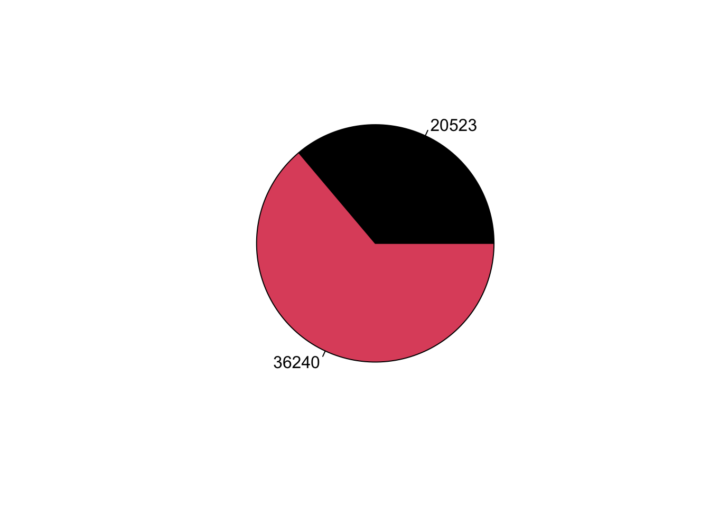
Other option is using a bar plot. Using the basic command of R, we
can use barplot. We nest the commands table
and prop.table within barplot.
barplot(prop.table(table(lapop21$ing4rec))*100, col=1:2)
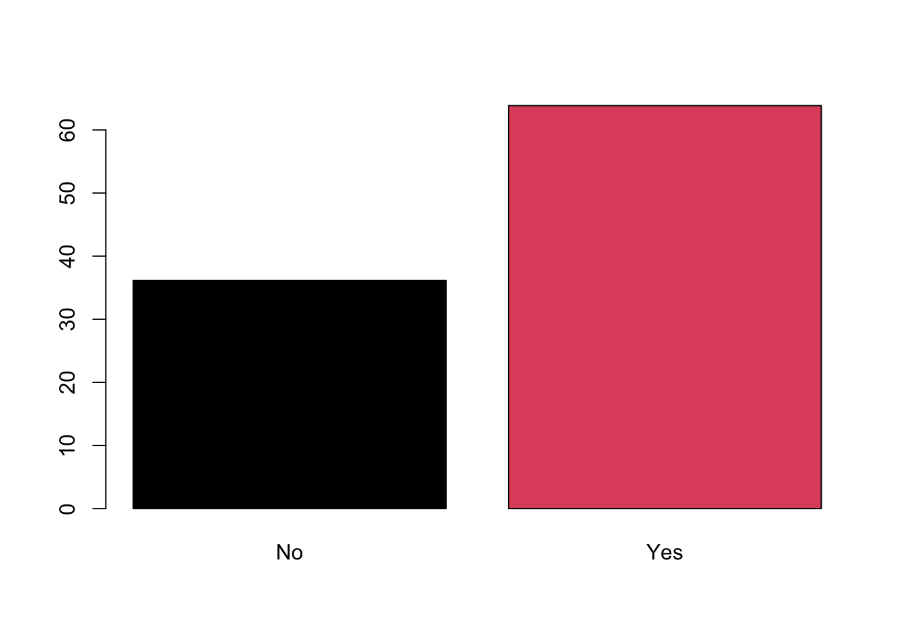
The base commands in R have a level of customization, but we have a
specialized library to produce a graph with more customization options
called ggplot. For example, to reproduce a bar plot of the
variable support for democracy, we call the library
ggplot2.
In this example, we have to define the basic specification within the
command ggplot. This command works by layers. First, we
specify the data to be used with data=lapop. Then, the
specification aes defines the aesthetic of the plot.
Generally, it is used to indicate what variables are plotted in what
axis (x or y). In this case, we are working with the data from scratch,
from the original dataset “lapop21”. This option obliges to “calculate”
the percentages within the specification aes with
y =..prop..*100. Also, we should use the specification
fill = to define that bars should present a percentage.
Other easier option is to create before a table from the original
data that captures percentages and to use this table in the
specification aes. Below, we present examples using this
option.
After the specification of data and axis, we have to define the type
of plot we want to use. We do this with geometries (“geom”). We define a
basic bar plot using the command geom_bar( ), where we
define internally the width of bars. With the specification
labs we define the labels of axis and the “caption”.
Finally, with the specification coord_cartesian we define
limits for x axis from 0 to 80.
library(ggplot2)
ggplot(data=lapop21, aes(x=ing4rec))+
geom_bar(aes(y=..prop..*100, group=1), width=0.5)+
labs(x="Support for democracy", y="Percentage",
caption="AmericasBarometer by LAPOP, 2021")+
coord_cartesian(ylim=c(0, 80))
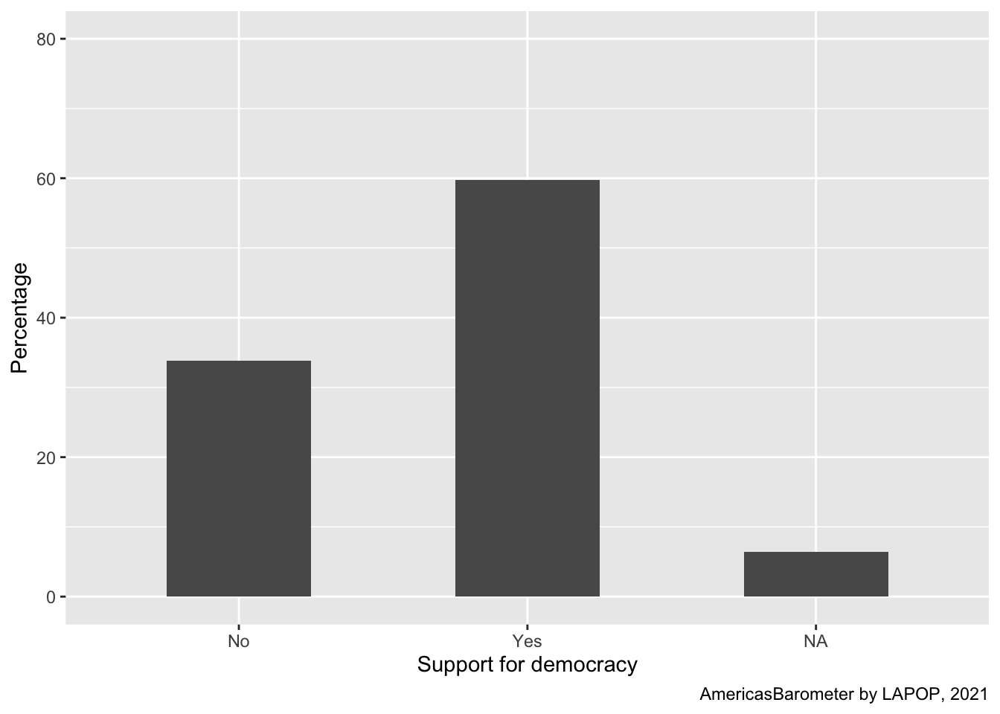
As we say, this plot presents a bar for the percentage of missing
values. If a researcher would like to present a plot with percentages of
valid cases, missing values should be dropped. We can use the command
subset again, but within ggplot for the
command (internally) works with the variable no considering the missing
values. The syntax !is.na( ) makes the command to not
include missing values of a variable in calculations. If we would have
used !is.na( ) out of ggplot, we would have
dropped all observations with missing values in the dataset, decreasing
the N and affecting next calculations.
ggplot(data=subset(lapop21, !is.na(ing4rec)), aes(x=ing4rec))+
geom_bar(aes(y=..prop..*100, group=1), width=0.5)+
labs(x="Support for democracy", y="Percentage",
caption="AmericasBarometer by LAPOP, 2021")+
coord_cartesian(ylim=c(0, 80))
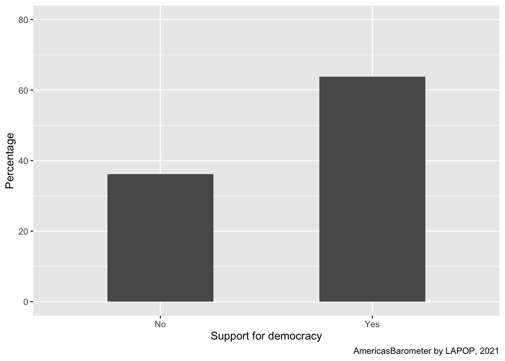
Up to this point, we have presented a bar plot of a single variable,
support for democracy, for the whole sample, that includes all
countries. Figure 1.1 shows the percentage of support for democracy by
country. We will see this type of plot in a following section.
Calculating the variables of social network users
As we saw in a previous module, you can calculate new variables with
conditional values of other variables using the ifelse
command. In this way, we calculate the variables of social network
users.
lapop18$fb_user <- ifelse(lapop18$smedia1==1 & lapop18$smedia2<=4, 1, 0)
lapop18$tw_user <- ifelse(lapop18$smedia4==1 & lapop18$smedia5<=4, 1, 0)
lapop18$wa_user <- ifelse(lapop18$smedia7==1 & lapop18$smedia8<=4, 1, 0)
Describing the variables
With the variables ready, we now proceed to make the general tables
with the table command. Note the use of # as a
way of making annotations, which are not R code.
table(lapop18$smedia1r) #Facebook
##
## Yes No
## 15389 11573
table(lapop18$smedia4r) #Twitter
##
## Yes No
## 2363 24558
table(lapop18$smedia7r) #Whatsapp
##
## Yes No
## 17446 9569
This table command gives us the absolute frequencies
(number of observations) for each category of variables (in this case
Yes and No). To get the relative frequencies, we will use the command
prop.table, where the previous command table
is nested.
prop.table(table(lapop18$smedia1r))
##
## Yes No
## 0.5707663 0.4292337
prop.table(table(lapop18$smedia4r))
##
## Yes No
## 0.08777534 0.91222466
prop.table(table(lapop18$smedia7r))
##
## Yes No
## 0.6457894 0.3542106
However, the command prop.table returns us too many
decimal places and the relative frequencies on a scale of 0 to 1. To
round this figure we use the round command, which allows us
to specify the number of decimal places to be displayed. Both the
table command and the prop.table are nested
within this new command. In this case, we use 3 decimals, so when it is
multiplied by 100, it remains in the form of a percentage with 1 decimal
place.
round(prop.table(table(lapop18$smedia1r)), 3)*100
##
## Yes No
## 57.1 42.9
round(prop.table(table(lapop18$smedia4r)), 3)*100
##
## Yes No
## 8.8 91.2
round(prop.table(table(lapop18$smedia7r)), 3)*100
##
## Yes No
## 64.6 35.4
It is not practical to present 3 tables when the variables have the
same response categories. For presentation purposes it might be better
to build a single table. You can save the partial tables in new objects
with the operator = and then join them as rows with the
command rbind in a new dataframe “table” with the command
as.data.frame, in such a way that the responses to each
social network appear in rows.
Facebook = round(prop.table(table(lapop18$smedia1r)), 3)*100
Twitter = round(prop.table(table(lapop18$smedia4r)), 3)*100
Whatsapp = round(prop.table(table(lapop18$smedia7r)), 3)*100
tabla = as.data.frame(rbind(Facebook, Twitter, Whatsapp))
tabla
## Yes No
## Facebook 57.1 42.9
## Twitter 8.8 91.2
## Whatsapp 64.6 35.4
To have a better presentation of the table, you can use the
kable command from the knitr package, using
the table built above.
library(knitr)
knitr::kable(tabla, format="markdown")
| Facebook |
57.1 |
42.9 |
| Twitter |
8.8 |
91.2 |
| Whatsapp |
64.6 |
35.4 |
Plotting the variables
In Graph 3.1 of the report it is observed that these data are
reported through a pie chart.
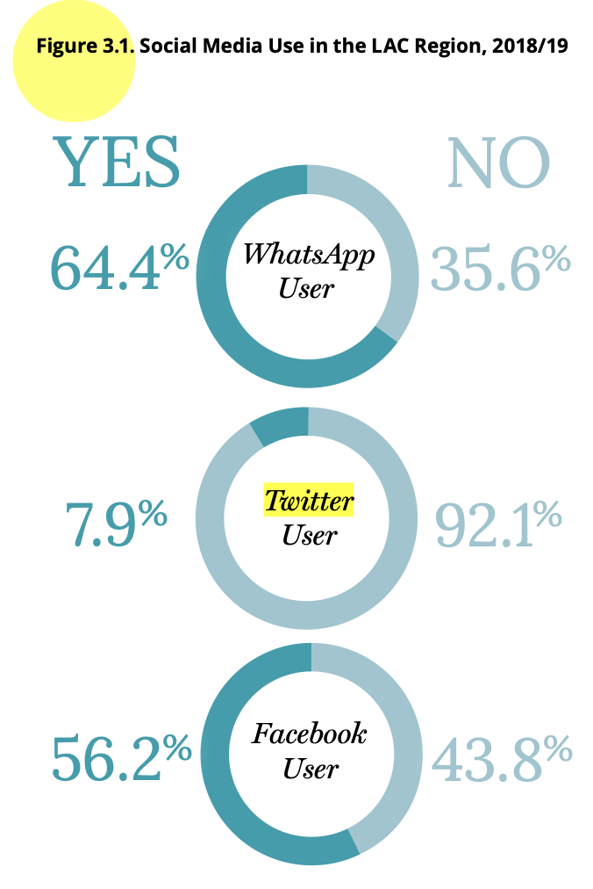
We can reproduce that graph using the pie command which
is part of the basic R syntax. Within this command you can nest the
table command to graph these values.
pie(table(lapop18$smedia1r))
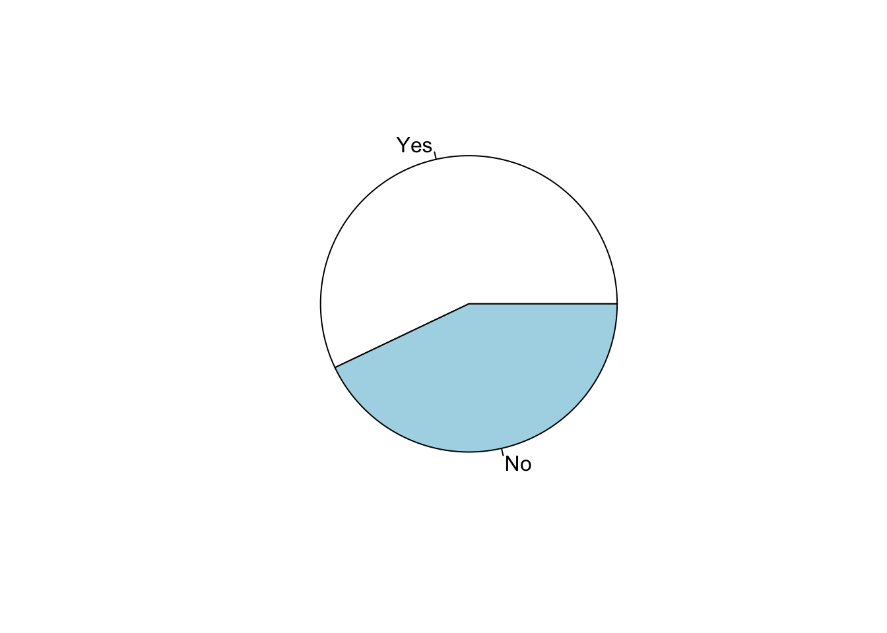
You could also think of a bar chart. Using the basic R commands, you
can use the barplot command.
barplot(prop.table(table(lapop18$smedia1r)))
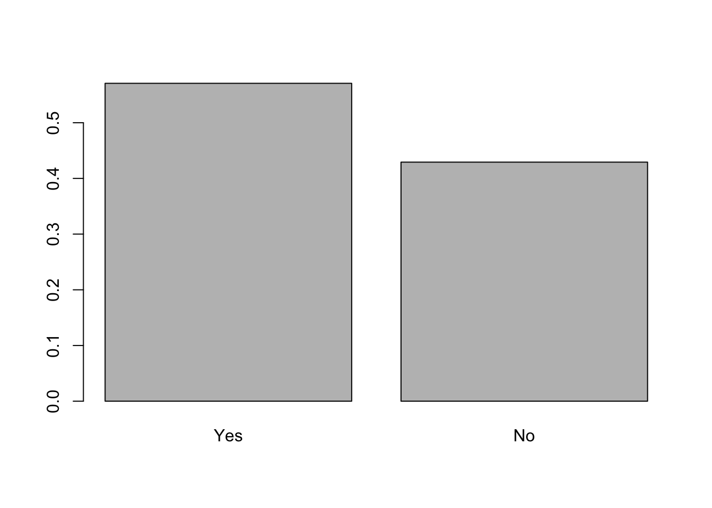
These graphical commands have options to adjust the graph, for
example to include percentages and adjust scales. But, to have more
graphical options, we can use the ggplot package to
reproduce the pie chart.
In this example, we have to define first the data to be used. The
subset command has been used again, but inside
ggplot so that the command (internally) works with the
variable but without the missing values. The !is.na ()
syntax prevents the command from including missing values of a variable
in calculations. If data = lapop had been used the graph
would have included a large sector corresponding to the proportion of
NA. If !is.na () had been used outside of
ggplot creating a new variable, all observations with
missing values would have been removed, which would decrease the N,
affecting future calculations.
The ggplot command works by adding layers. The
aes specification is used to define the “aesthetics” of the
graph. It is generally used to indicate which variable is going to be
graphed on which axis (x or y). You can also use the fill =
specification to define the groups to be generated.
After specifying the data and the axes, you have to specify the type
of graph you want to make. This is done with geometries (“geom”). There
is no direct geometry to make a pie chart, so you have to initially use
a simple bar chart, using the command geom_bar (), where
the width of the bar is defined internally. If we left the syntax at
this point, a bar would be generated that would be divided by the values
of the variable “smedia1r”. To generate the pie chart, you have to add
another command coord_polar, which transforms the bar to
polar coordinates, creating a pie chart.
library(ggplot2) #librería especializada en gráficos
ggplot(data=subset(lapop18, !is.na(smedia1r)), aes(x="", fill=smedia1r))+
geom_bar(width=1) +
coord_polar("y", start=0)
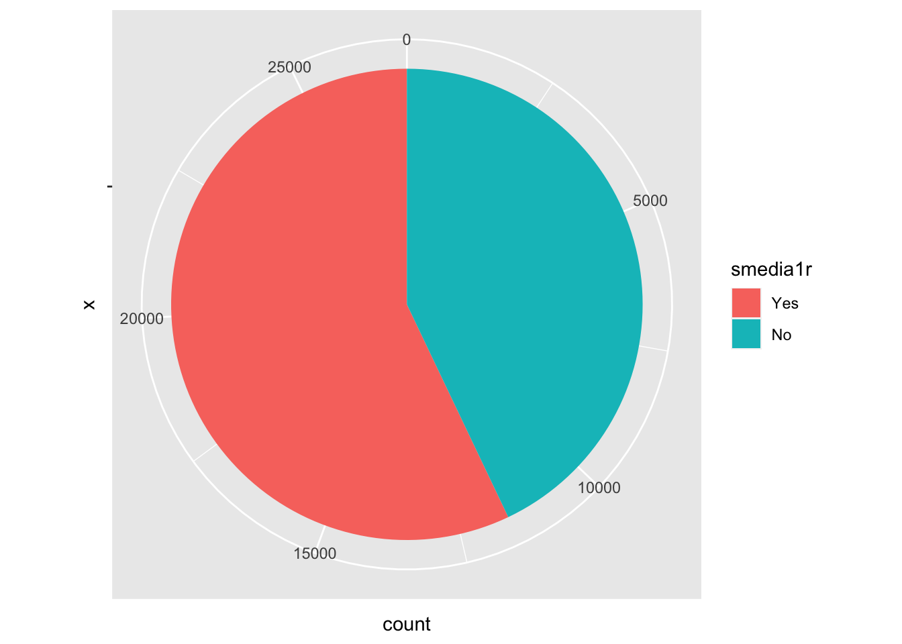
The above graph has started from the same dataframe “lapop18”, using
the data from “smedia1r”. However, to better manipulate the graph it is
easier to create a new dataframe with the aggregated data (frequencies
and %). In other words, save the results data from the “smedia1r” table
in a new dataframe. Then that new dataframe is used to make the pie
graph with ggplot.
One aspect to note is that in this case the tidyverse is being used,
which includes the pipe %>% command from the
dplyr library, which is a (slightly) different way of
writing code in R, in a concatenated way, step by step. A simple
explanation of how the pipe is used can be found here.
The first thing to notice is that a new object called “df” is going
to be created. Information coming from the dataframe “lapop18” will be
stored in this object. The subset command is used to remove
the missing values of “smedia1r” from the calculation of the
percentages. Then (%>%), this data will be grouped by
categories of the variable “smedia1r”. Next (%>%), in
each group the total number of observations is calculated with the
command summarise(n = n()). Finally (last step with
%>%), with this total by groups the percentages are
calculated and these percentages are saved in a new column “per”.
library(dplyr)
df = subset(lapop18, !is.na(smedia1r)) %>%
group_by(smedia1r) %>%
dplyr::summarise(n = n()) %>%
mutate(per=round(n/sum(n), 3)*100)
df
## # A tibble: 2 × 3
## smedia1r n per
## <fct> <int> <dbl>
## 1 Yes 15389 57.1
## 2 No 11573 42.9
With this syntax, a table is created containing the total number of
observations and the percentage for each category of the variable
“smedia1r”. A more direct way to create the same data is to use the
janitor library and the tabyl command. In R
there are multiple ways to get to the same results.
library(janitor)
subset(lapop18, !is.na(smedia1r)) %>%
tabyl(smedia1r)
## smedia1r n percent
## Yes 15389 0.5707663
## No 11573 0.4292337
Once we have the table, we can use it to produce the pie chart with
ggplot. Note that in this case the data used comes from the
dataframe df (not from lapop18). This dataframe has a column called
“per” with the respective percentages, which should be plotted on the
Y-axis. As in the previous case, to make the pie chart, we start from
the bar chart (hence geom_bar), which is then passed to
polar coordinates (hence coord_polar).
A text layer is added, with the specification geom_text.
Within this specification, an “aesthetic” is determined with the data
label aes(label=...), where the percentage data “per” and
the symbol “%” are joined with the paste command, with a
space (sep=...) between them. Set the font color with
color="...", sets to white to contrast with the colors of
the pie chart. With the command hjust=... the horizontal
position of this text is adjusted. The ggplot command can
include various “themes” for the plot. In this case,
theme_void() has been used, which indicates an empty
background. Finally, with the specification
scale_fill_discrete(name=...) you can change the title of
the legend so that it does not show the name of the variable, but a more
suitable label.
ggplot(data=df, aes(x="", y=per, fill=smedia1r))+
geom_bar(width=1, stat="identity")+
geom_text(aes(label=paste(per, "%", sep="")), color="white",
position=position_stack(vjust=0.5), size=3)+
coord_polar("y")+
theme_void()+
scale_fill_discrete(name="Do you have a Facebook account?")
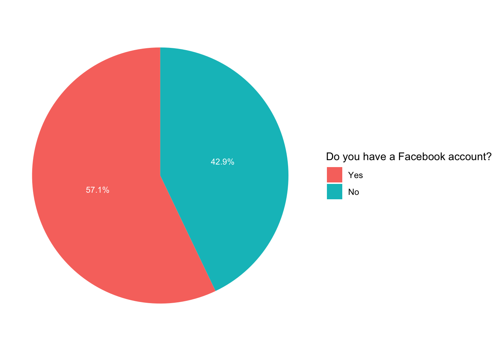
If instead of a pie chart you want to display a bar chart, with the
data from the “lapop18” dataframe you can use the following code. Unlike
the first pie chart, the aes(..) specification now includes
the variable “smedia1r” as the variable to be plotted on the X-axis.
Inside the geometric object geom_bar() it is indicated that
the bar must represent the proportions in percentages
aes(y=..prop..*100, group=1). In this example, a general
label for the graph and for the axes has been included with the
labs(...) command. In this command you can also add a
“caption” to indicate the source of the data. Finally, the specification
coord_cartesian(ylim=c(0,60)) limits the Y axis to values
between 0 and 60.
ggplot(data=subset(lapop18, !is.na(smedia1r)), aes(x=smedia1r))+
geom_bar(aes(y=..prop..*100, group=1), width=0.5)+
labs(title="Do you have a Facebook account?", x="Facebook user", y="Percentage", caption="AmericasBarometer by LAPOP, 2018/19")+
coord_cartesian(ylim=c(0, 60))
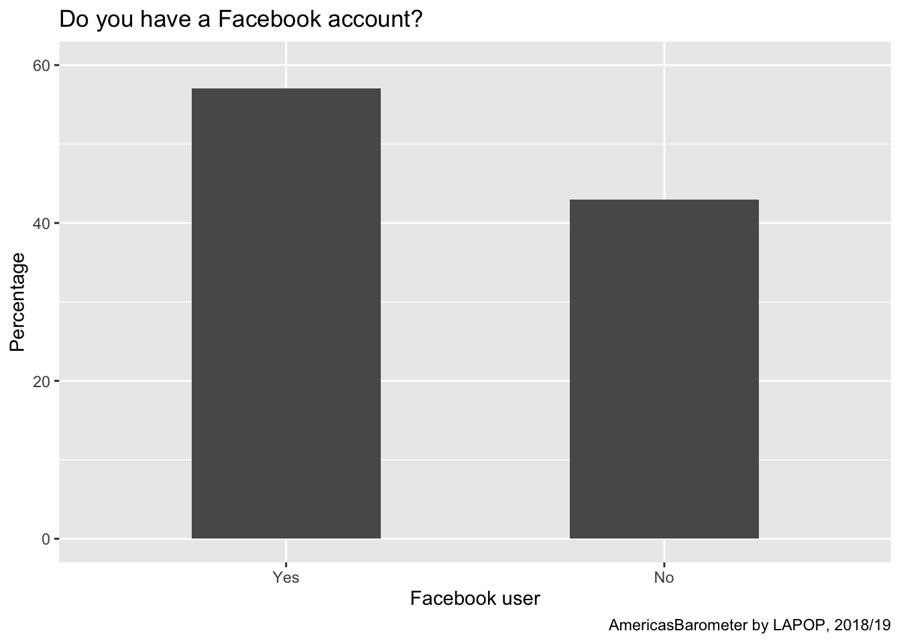
In this case you can also use the grouped data of the “df” dataframe.
Unlike the previous option, in “df” there is the percentage data, so it
should not be calculated in the code, so in the aesthetics specification
it indicates that the alternatives should be shown on the X axis of the
variable “smedia1r” and on the Y axis the percentage, in this way
aes(x=media1r, y=per). For this reason also in the
geom_bar specification, now instead of requiring the
calculation of the percentage, it is only indicated to replicate the
data (with stat="identity") from aes. Finally,
in this case we add the text layer to include the percentages in each
column, with the geom_text specification.
ggplot(df, aes(x=smedia1r, y=per))+
geom_bar(stat="identity", width=0.5)+
geom_text(aes(label=paste(per, "%", sep="")), color="black", vjust=-0.5)+
labs(title="Do you have a Facebook account?", x="Facebook user", y="Percentage", caption="AmericasBarometer by LAPOP, 2018/19")+
coord_cartesian(ylim=c(0, 60))
We consider this option a easier way to work with this data. First,
we have to create a dataframe with the percentages and the labels. Then,
we have to use this dataframe in ggplot. In the following
sections, we will use this way.
Summary
In this document we have worked with nominal categorical variables,
such as whether or not you suppport democracy or whether or not you use
social networks. We present several ways to describe these variables in
frequency tables and to plot these variables, using circular or bar
graphs.
Calculations including design effect
The results for the 2018/19 wave are not exactly the same as those in
the report, since LAPOP includes the effect of the sample design in its
calculations. According to this syntax, it is found that 57.1% of
interviewees report being a Facebook user, when 56.2% appear in the
report. The same with Twitter, which here is calculated at 8.8% and in
the report 7.9%; and with WhatsApp that appears here with 64.6% and in
the report with 64.4%. As indicated in the section on the use of survey
weights using data from the AmericasBarometer (available here),
there are several ways to reproduce the results by incorporating the
survey weights. A first option is to use the command freq,
which allows the inclusion of a weighting variable, such as
“weight1500”. The plot=F specification is included to not
produce the bar graphs.
library(descr)
descr::freq(lapop18$fb_user, lapop18$weight1500, plot = F)
## lapop18$fb_user
## Frequency Percent Valid Percent
## 0 11337 41.988 43.77
## 1 14564 53.939 56.23
## NA's 1100 4.073
## Total 27000 100.000 100.00
descr::freq(lapop18$tw_user, lapop18$weight1500, plot = F)
## lapop18$tw_user
## Frequency Percent Valid Percent
## 0 23819 88.220 92.023
## 1 2065 7.647 7.977
## NA's 1116 4.133
## Total 27000 100.000 100.000
descr::freq(lapop18$wa_user, lapop18$weight1500, plot = F)
## lapop18$wa_user
## Frequency Percent Valid Percent
## 0 9252 34.266 35.63
## 1 16714 61.903 64.37
## NA's 1035 3.832
## Total 27000 100.000 100.00
Without considering the survey weights, 57.1% of the interviewees
have a Facebook account. This percentage varies to 55.2% if the
expansion variable is included, which is the value shown in the report.
These weighted results can also be saved to objects and then graphed in
the same way as the unweighted results.
In the case of Facebook, the table can be saved as a dataframe, using
the command as.data.frame. This table includes data that we
do not require, such as the NA’s and Total row and the Percent column.
These rows and this column are deleted using the specification
[-c(3,4), -2].
The columns are then renamed to avoid the “Valid Percent” name. They
are simply named “freq” and “per”. This column “per” is the one that has
the data that we will graph. Finally, a “lab” column is added with the
labels of each row of results.
fb <- as.data.frame(descr::freq(lapop18$fb_user, lapop18$weight1500, plot = F))
fb = fb[-c(3,4), -2]
colnames(fb) = c("freq", "per")
fb$lab = c("No", "Yes")
fb
## freq per lab
## 0 11336.69 43.77052 No
## 1 14563.60 56.22948 Yes
With this new dataframe we can replicate the same codes used above to
make a bar chart or a pie chart. The following code displays the bar
chart. Note that now the “fb” dataframe is used and that in aes it is
specified that the data from the “lab” column must be on the X axis and
the data from the “per” column must be on the Y axis.
ggplot(data=fb, aes(x=lab, y=per))+
geom_bar(stat="identity", width=0.5)+
geom_text(aes(label=paste(round(per, 1), "%", sep="")), color="black", vjust=-0.5)+
labs(title="Do you have a Facebook account?", x="Facebook user",
y="Percentage", caption="AmericasBarometer by LAPOP, 2018/19")+
coord_cartesian(ylim=c(0, 60))

The same can be done to create a pie chart. This graph reproduces the
results found in Graph 3.1 of the report.
ggplot(data=fb, aes(x=2, y=per, fill=lab))+
geom_bar(stat="identity")+
geom_text(aes(label=paste(round(per, 1), "%", sep="")), color="white",
position=position_stack(vjust=0.5), size=3)+
coord_polar("y")+
theme_void()+
labs(caption="AméricasBarometer by LAPOP, 2018/19")+
scale_fill_discrete(name="Do you have a Facebook account?")+
xlim(0.5, 2.5)

The second option to reproduce the results in the report is using the
package survey. As we indicate in this section,
we have to define first the sample design with the command
svydesign.
library(survey)
lapop.design = svydesign(ids = ~upm, strata = ~estratopri, weights = ~weight1500, nest=TRUE, data=lapop18)
Once you have created the data with the expansion factor in the
“lapop.design” object, you can use the native commands of the package
survey to perform calculations. For example, to calculate
the frequency distribution table you can use the svytable
command.
svytable(~fb_user, design=lapop.design)
## fb_user
## 0 1
## 11336.69 14563.60
These frequencies can be nested in the prop.table
command to calculate the percentages of social network users. These
results are the same as those shown in the previous graphs and those
that appear in the report.
These data can also be saved in a dataframe that is adapted for
graphing, following the same procedure as in the previous graphs.
prop.table(svytable(~fb_user, design=lapop.design))
## fb_user
## 0 1
## 0.4377052 0.5622948
prop.table(svytable(~tw_user, design=lapop.design))
## tw_user
## 0 1
## 0.92023002 0.07976998
prop.table(svytable(~wa_user, design=lapop.design))
## wa_user
## 0 1
## 0.3563091 0.6436909

Social media users
Now, we are presenting an example of the report The Pulse of Democracy for the 2018/19 round. We follow similar procedures as the section above and we will replicate some figures of the report for the 2018/19 round. We are going to work with these variables: SMEDIA1. Do you have a Facebook account?; SMEDIA4. Do you have a Twitter account?; SMEDIA7. Do you have a WhatsApp account?. These questions have as answer options:
Yes
No
When reading the database in R, this program imports the variables as “num”, which most functions in R treat as numeric. These variables have to be converted to variables of type “factor” with the command
as.factor, since they are categorical variables. We save these new variables in the dataframe. Here we have used the=operator which is similar to the<-operator that assigns a procedure to a new object of an R dataframe.These new variables of type factor have to be labeled with the command
levels. A vector with concatenated labels is used, using the commandc( ).